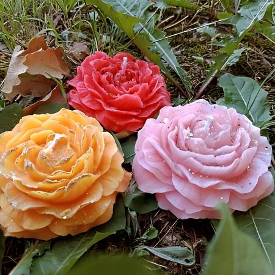
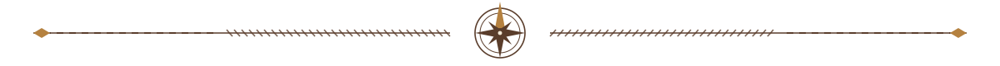
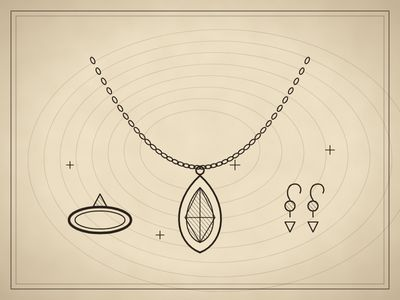
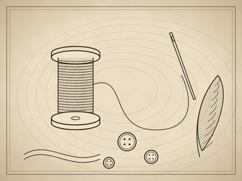
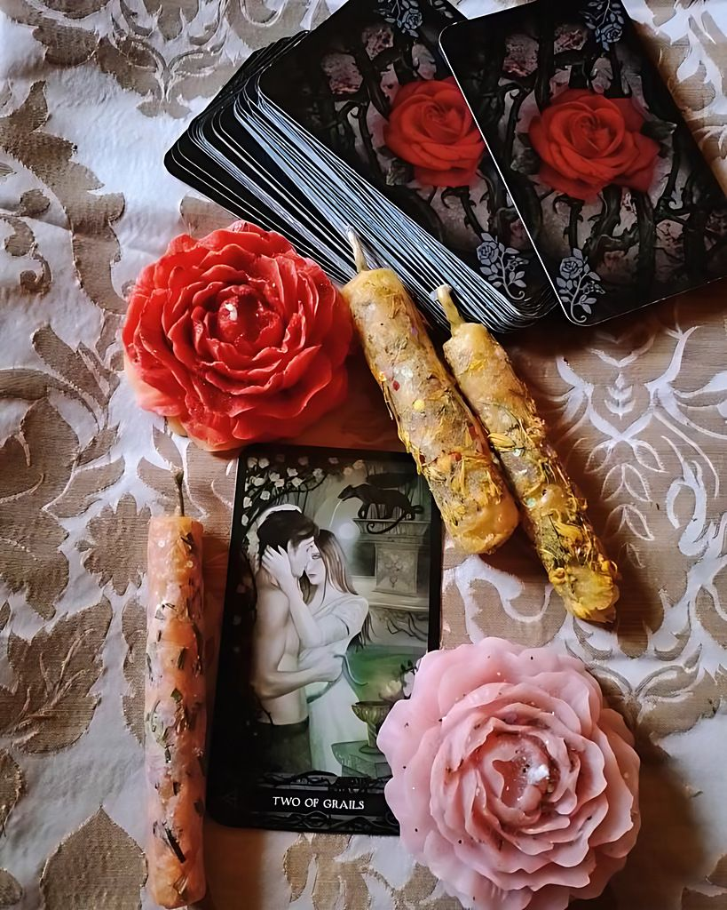

Fine Imports
Handcrafted goods from abroad, brought to Canada and offered to shops across the country. Our first brand is Arcana Artis, ritual candles made by hand in Florence, Italy.
Our imports
Kenora area · Northwestern Ontario
Northern Goods & Fine Imports
A small northern trading company bringing well-made things together: carefully chosen imports, handmade pieces of our own, and the work of local craftspeople.
The trading post
Rabbit Lake Trading Company is an import and distribution business with a northern heart. We bring in handcrafted goods from abroad, make our own pieces here at home, and give local makers another way to reach people who value handmade work.

What we carry

Handcrafted goods from abroad, brought to Canada and offered to shops across the country. Our first brand is Arcana Artis, ritual candles made by hand in Florence, Italy.
Our imports
Our own work, made by hand: small jewellery, costume supplies, and pieces from our art, like swords and outfits.
What's in the works
We want to carry the work of craftspeople in our region. If you make things by hand and want more people to see them, we'd love to hear from you.
Sell through RLTC
First import
Handcrafted ritual candles made by Alisa La Volpe Scura in Florence, Italy.
Rose and moon candles, earthen candles cast with herbs and roots, and candle sets for love, abundance and inspiration. Each one is made by hand, in small batches, with a dark and beautiful sense of craft.
Rabbit Lake Trading Company is bringing Arcana Artis to Canada and offering it to Canadian retailers.
For retailers
If you run a shop in Canada and our goods suit your shelves, we'd be glad to talk. Wholesale pricing and order minimums are available on request.

Get in touch
Questions about a product, a wholesale order, or selling your work through us? Send a note and we'll get back to you.